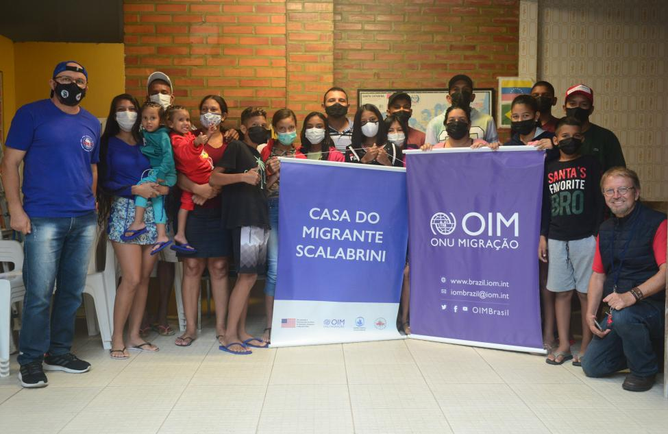

Notícias de Imigração
Promovem a integração de imigrantes
10 Fevereiro 2023
Governo brasileiro lança programas de ensino de português e cursos de
cultura local para facilitar a integração de imigrantes no país.
Ana Silva
Histórias de Sucesso
A Jornada de Superacão de Maria
10 Março de 2020
Maria, uma imigrante vinda da Venezuela, chegou ao Brasil em busca de
uma vida melhor para sua família. Ela enfrentou inúmeras dificuldades,
mas nunca desistiu. Com determinação e trabalho árduo, Maria conseguiu
abrir seu próprio negócio e se tornou um exemplo de superação para
outros imigrantes em sua comunidade.
Carlos Silva

Histórias de Sucesso
O Sonho Realizado de Juan
5 Julho 2019
Juan, um imigrante colombiano, veio para o Brasil em busca de
oportunidades de trabalho. Ele enfrentou barreiras linguísticas e
culturais, mas nunca perdeu a esperança. Com muito esforço e
dedicação, Juan conseguiu se formar em uma universidade brasileira e
agora trabalha como engenheiro, realizando seu sonho e contribuindo
para o desenvolvimento do país.
Ana Santos
Notícias de Imigração
Brasil estabelece medidas de proteção a refugiados
25 Abril 2023
O governo brasileiro implementa políticas de assistência e proteção
aos refugiados venezuelanos em situação de vulnerabilidade,
proporcionando-lhes apoio e acesso a serviços básicos.
 Matheus Lopez
Matheus Lopez
Notícias de Imigração
Amplia oportunidades de trabalho para imigrantes
7 Maio 2023
O governo brasileiro facilita a contratação de imigrantes altamente
qualificados, simplificando os procedimentos de visto e criando
programas especializados de emprego.
 Laura Oliveira
Laura Oliveira

Recursos e Dicas
A Importância da Integração Social por OIM
03 de Maio de 2023
um imigrante venezuelano, foi beneficiado pelo programa de integração
da OIM no Brasil. Através de cursos de idiomas, capacitação
profissional e apoio psicossocial, Miguel conseguiu se adaptar ao novo
país, encontrar emprego e se tornar um membro ativo da sociedade
brasileira. Sua história demonstra o impacto positivo que a integração
social pode ter na vida dos migrantes.
Laura Oliveira
Notícias de Imigração
Brasil fortalece o combate ao tráfico de pessoas
15 de Setembro - 2022
O Brasil intensifica esforços para combater o tráfico de pessoas no
campo migratório, implementando medidas de prevenção, proteção e
repressão aos responsáveis.
 Marco Fernandes
Marco Fernandes

Recursos e Dicas
Iniciativa Empreendedora de Ana: Empoderando Mulheres Imigrantes
15 Julho 2022
Ana, uma imigrante africana, participou de um projeto de capacitação
para mulheres empreendedoras da OIM no Brasil. Com o apoio da
organização, Ana desenvolveu habilidades de negócios, recebeu
assistência técnica e acesso a microcrédito. Agora, ela administra com
sucesso seu próprio negócio, empregando outras mulheres imigrantes e
contribuindo para a economia local.
Lucas Oliveira
Histórias de Sucesso
A História Inspiradora de Ahmed
20 de Setembro de 2018
Ahmed, um refugiado sírio, encontrou abrigo no Brasil depois de fugir
da guerra em seu país. Ele começou do zero, aprendendo o idioma e se
adaptando à nova cultura. Com habilidades culinárias excepcionais,
Ahmed abriu um pequeno restaurante que se tornou muito popular. Sua
história inspiradora de resiliência e coragem tocou o coração de
muitas pessoas, tornando-o um exemplo de sucesso para outros
imigrantes.
Luiza Oliveira

Notícias de Imigração
Novas políticas migratórias aceleram o processo de regularização
03 de Novembro - 2022
O governo brasileiro anuncia mudanças nos procedimentos de
regularização imigratória para facilitar e agilizar o acesso dos
imigrantes aos documentos legais.
Gabriela Almeida
Notícias de Imigração
Programas de empreendedorismo para imigrantes
20 de Dezembro - 2022
Iniciativas governamentais e privadas no Brasil oferecem programas de
apoio e financiamento para que os imigrantes possam empreender e
contribuir para o desenvolvimento econômico do país.
Rafael Costa
Recursos e Dicas
Toti Diversidade, Promove a empregabilidade de refugiados
10 de Dezembro - 2022
Ao longo de cinco anos, a Toti Diversidade formou 660 pessoas. Impacto
será potencializado em 2023, ano em que vai capacitar mais de 750
refugiados.
Refael Costa